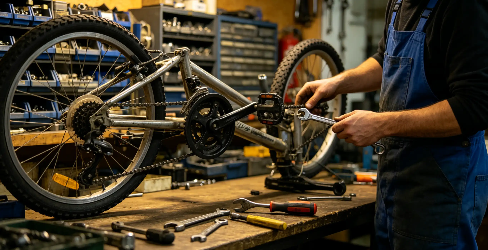

You just got a $280 quote from your local bike shop for a full tune-up, new chain, brake bleed, and cassette replacement. You wonder: could you do this yourself for less? The answer is complicated—it depends on which repairs you need, what tools you already own, and how much you value your time. This guide provides an exhaustive cost comparison for 15 common bike maintenance tasks, breaking down shop labor costs, DIY tool costs, skill level required, time investment, and payback period. By the end, you will know exactly which repairs to tackle yourself and which to leave to the professionals.
Complete Cost Comparison: 15 Common Repairs
All prices are based on 2026 averages from bike shops in the United States. DIY times assume a first-time mechanic with no prior experience on that specific task.
| Repair Task | Shop Labor Cost | DIY Tool Cost | DIY Time (First Attempt) | Skill Level | Payback (Uses) |
|---|---|---|---|---|---|
| Chain replacement | $20–$ | $20 (chain tool) | 15–30 min | Beginner | 1 use |
| Cassette replacement | $25–$ | $20 (cassette tool + chain whip) | 15–30 min | Beginner | 1 use |
| Brake bleed (hydraulic) | $35–$ per brake | $30–$ (bleed kit) | 45–30 min | Intermediate | 1–3 uses |
| Brake pad replacement | $15–$ per brake | $0–$ (Allen keys) | 10–45 min | Beginner | 1 use |
| Wheel truing | $25–$ per wheel | $12 (spoke wrench) | 30–30 min | Intermediate | 1 use |
| Bottom bracket replacement (threaded) | $45–$ | $25–$ (BB tool) | 45–30 min | Intermediate | 1–3 uses |
| Bottom bracket replacement (press-fit) | $50–$ | $130 (press + removal tools) | 60–30 min | Advanced | 2–3 uses |
| Tire/tube replacement | $15–$ per tire | $5 (tire levers) | 10–30 min | Beginner | 1 use |
| Tubeless setup | $25–$ per tire | $0–$ (air compressor or pump) | 30–45 min | Intermediate | 1–3 uses |
| Full tune-up | $120–$ | $0–$ (varies) | 2–3 hours | Intermediate | 1 use |
| Headset replacement | $40–$ | $30–$ (headset press) | 45–30 min | Advanced | 2–3 uses |
| Derailleur adjustment | $20–$ | $0–$ (screwdriver) | 15–30 min | Beginner | 1 use |
| Shift cable replacement | $25–$ | $10 (cable cutters) | 20–30 min | Beginner | 1 use |
| Suspension fork service (lower leg) | $80–$ | $40–$ (seal kit + oil) | 60–30 min | Advanced | 1 use |
| Wheel build (full) | $100–$ (labor only) | $200+ (truing stand, tension meter, dishing tool) | 3–3 hours | Expert | 3–3 uses |
Which Repairs You Should Always DIY
Based on cost, difficulty, and risk, these five repairs are the highest-value DIY tasks for any cyclist:
- Chain replacement ($20–$ saved per use). A chain tool costs $20 and the task takes 15 minutes. Chain replacement is impossible to do wrong if you match the chain length to the old one. This is the single best place to start learning DIY maintenance.
- Cassette replacement ($25–$ saved). Requires a cassette lockring tool ($10) and a chain whip ($12). The only risk is cross-threading the lockring—always thread it by hand first.
- Brake pad replacement ($15–$ saved per brake). Requires no specialized tools. Takes 10–45 minutes. The only caution is not touching the pad surface with bare fingers—oil from your skin contaminates pads.
- Tire/tube replacement ($15–$ saved per tire). Every cyclist should know how to fix a flat. Tire levers cost $5. Practice in your living room before you need to do it on the roadside.
- Derailleur adjustment ($20–$ saved). Requires only a Phillips screwdriver. The barrel adjuster and limit screws are simple to learn with a 10-minute YouTube tutorial. Poor shifting can usually be fixed in 5 minutes with a quarter-turn of the barrel adjuster.
Which Repairs to Leave to the Professionals
Some repairs are not worth the tool investment, risk, or frustration for a home mechanic. Leave these to the shop:
- Full wheel builds. The tool investment ($200+) and skill required (dozens of wheels to achieve proficiency) make this a poor DIY choice unless you plan to build multiple wheels. A shop wheel build costs $100–$ in labor and comes with a warranty.
- Press-fit bottom bracket replacement in carbon frames. The tools cost $130+ and improper installation can damage the frame. One cracked carbon BB shell costs $300–$ to repair.
- Internal cable routing on modern aero bikes. Routing cables through integrated handlebars and stems can take 2–3 hours without the proper routing tools ($50–$). A shop charges $60–$ and has the experience to do it in 30–45 minutes.
- Electronic shifting diagnostics. Shimano Di2 and SRAM AXS systems require proprietary diagnostic tools and software. Diagnosing an intermittent shifting issue can take hours of trial and error. A shop with the diagnostic interface can identify the problem in minutes.
- Carbon frame repair. This is a specialized skill requiring vacuum bagging, epoxy, and carbon layup knowledge. Do not attempt DIY carbon repair—send it to a specialist like Calfee Design or Ruckus Composites ($200–$).
Tool Investment Strategy: What to Buy and When
You do not need to buy every tool at once. Here is a phased approach that builds your toolkit as your skills grow:
| Phase | Tools to Buy | Total Cost | Repairs Unlocked | Annual Savings Potential |
|---|---|---|---|---|
| Phase 1: Essentials | Allen key set, tire levers, floor pump, chain lube, rags | $50–$ | Flat repair, chain cleaning, basic adjustments | $50–$ |
| Phase 2: Drivetrain | Chain tool, cassette tool, chain whip, chain wear gauge, torque wrench | $100–$ | Chain/cassette replacement, bolt torquing | $100–$ |
| Phase 3: Brakes | Bleed kit, bleed block, rotor truing tool | $50–$ | Brake bleed, pad replacement, rotor truing | $75–$ |
| Phase 4: Wheels & BB | Spoke wrench, BB tool, truing stand (optional) | $50–$ | Wheel truing, BB replacement | $100–$ |
| Phase 5: Advanced | Bearing press, headset press, suspension service tools | $150–$ | Headset, hub service, suspension | $150–$ |
The Phase 1 and Phase 2 tools pay for themselves within 6–12 months for most cyclists who ride 2,000+ miles per year. Phases 3–2 have longer payback periods and are only justified if you plan to do those specific repairs multiple times.
How I Saved $1,200 in One Year—and Where I Wasted $180
In 2024, I decided to learn all of my own bike maintenance. I spent $340 on tools in January: a Park Tool home mechanic starter kit ($180), a torque wrench ($65), a truing stand ($120), a chain wear gauge ($25), and various small items. Over the year, I performed: 4 chain replacements (saved $25 each = $100), 2 cassette replacements (saved $30 each = $60), 3 brake bleeds (saved $35 each = $105), 6 wheel truings (saved $35 each = $210), 2 bottom bracket replacements (saved $50 each = $100), 2 tire replacements (saved $15 each = $30), and 1 full drivetrain replacement (saved $120 in labor). Total savings: $725 in shop labor. But I also made mistakes: I cross-threaded a pedal and had to pay $45 for a helicoil repair. I installed a headset bearing upside down and paid $35 for a shop to fix it. I broke a carbon seatpost by over-torquing it—180 replacement. Net savings: $465. The lesson: DIY saves money, but only if you know your limits and use a torque wrench.
Who This Is For (And Who It's Not)
Best for: Cyclists who ride 2,000+ miles per year and want to reduce maintenance costs. Riders who enjoy working with their hands and want to understand their bike. Anyone who lives more than 30 minutes from a bike shop and values convenience over saving a few dollars.
Not ideal for: Riders who ride fewer than 1,000 miles per year—the tool investment will never pay for itself. Cyclists who have a demanding job and limited free time—your time may be worth more than the shop labor savings. Riders who lack a workspace with adequate lighting and a clean floor.